Chapter 7 Topics in Exploratory Data Analysis I
Prof. Taisei Kaizoji and R Notebook Compiled by HS
Get AGCO2rv.csv from Moodle and place it at the same place as this file.
Reference: Data Analysis for Researchers Week 7(02/02)
- Inference Statistics Regression Analysis
Summary
- Give a descriptive name to each variable, when importing data by
WDIcommand. - Save data of investigation by
write_csv, but if you have RNotebook, you do not need to save at every step. - If you use pipe in
tidyverse, i.e, %>%, properly, you do not need toattach(data)ordettach(data).
Dot Place Holder in lm.
In the following, the following format is used.
df %>% lm(y ~ x, .)This is same as
lm(y ~ x, data = df)‘.’ is called the dot place holder. Recall that most of the function (or command) we use in tidyverse, the first argument is the data frame. When we use piping, we omit the first argiment. For example,
df %>% ggplot(aes(x, y)) + geom_point()is same as
ggplot(df, aes(x,y)) + geom_point()However, the data frame argument of lm() is not the first one, therefore we use the dot place holder to show the place the data frame should be inserted.
7.1 Part I: Regression 1:
Run the following only once, or you can install these packages using install packages in the Tool menu.
install.packages("car")
install.packages("modelsummary")7.1.1 Why does GDP vary from country to country?
library(tidyverse) # tidyverse Package, a collection of packages for data science
library(WDI) # WDI Package for World Development Indicators
library(car) #VIF Tool for checking multi-collinearity## Loading required package: carData##
## Attaching package: 'car'## The following object is masked from 'package:dplyr':
##
## recode## The following object is masked from 'package:purrr':
##
## somelibrary(modelsummary) # Tool for writting tables of the regression results- WDI Indicators
- NY.GDP.MKTP.CD: GDP (current US$)
- SP.POP.TOTL: Population, total
- AG.LND.TOTL.K2: Land area (sq. km)
wb <- as_tibble(WDI(country="all",
indicator=c(gdp = "NY.GDP.MKTP.CD", pop = "SP.POP.TOTL", land = "AG.LND.TOTL.K2"),
start=1960, end=2020,
extra=TRUE))
wb## # A tibble: 16,226 × 15
## iso2c country year status lastupda…¹ gdp pop land iso3c region
## <chr> <chr> <int> <chr> <chr> <dbl> <dbl> <dbl> <chr> <chr>
## 1 1A Arab World 1963 "" 2022-09-16 NA 1.00e8 1.36e7 ARB Aggre…
## 2 1A Arab World 1960 "" 2022-09-16 NA 9.22e7 NA ARB Aggre…
## 3 1A Arab World 1971 "" 2022-09-16 4.98e10 1.25e8 1.36e7 ARB Aggre…
## 4 1A Arab World 1972 "" 2022-09-16 5.94e10 1.29e8 1.36e7 ARB Aggre…
## 5 1A Arab World 1961 "" 2022-09-16 NA 9.47e7 1.36e7 ARB Aggre…
## 6 1A Arab World 1962 "" 2022-09-16 NA 9.73e7 1.36e7 ARB Aggre…
## 7 1A Arab World 1975 "" 2022-09-16 1.58e11 1.40e8 1.36e7 ARB Aggre…
## 8 1A Arab World 1976 "" 2022-09-16 1.97e11 1.44e8 1.36e7 ARB Aggre…
## 9 1A Arab World 1973 "" 2022-09-16 7.53e10 1.32e8 1.36e7 ARB Aggre…
## 10 1A Arab World 1974 "" 2022-09-16 1.43e11 1.36e8 1.36e7 ARB Aggre…
## # … with 16,216 more rows, 5 more variables: capital <chr>, longitude <chr>,
## # latitude <chr>, income <chr>, lending <chr>, and abbreviated variable name
## # ¹lastupdatedwb_ag20 <- wb %>% filter(year == 2020 & region=="Aggregates")
wb_ag20## # A tibble: 47 × 15
## iso2c country year status lastu…¹ gdp pop land iso3c region capital
## <chr> <chr> <int> <chr> <chr> <dbl> <dbl> <dbl> <chr> <chr> <chr>
## 1 1A Arab W… 2020 "" 2022-0… 2.50e12 4.36e8 1.31e7 ARB Aggre… ""
## 2 1W World 2020 "" 2022-0… 8.49e13 7.76e9 1.30e8 WLD Aggre… ""
## 3 4E East A… 2020 "" 2022-0… 1.75e13 2.11e9 1.60e7 EAP Aggre… ""
## 4 7E Europe… 2020 "" 2022-0… 2.98e12 4.01e8 2.24e7 ECA Aggre… ""
## 5 8S South … 2020 "" 2022-0… 3.48e12 1.86e9 4.77e6 SAS Aggre… ""
## 6 B8 Centra… 2020 "" 2022-0… 1.65e12 1.02e8 1.11e6 CEB Aggre… ""
## 7 EU Europe… 2020 "" 2022-0… 1.53e13 4.47e8 4.00e6 EUU Aggre… ""
## 8 F1 Fragil… 2020 "" 2022-0… 1.68e12 9.61e8 2.05e7 FCS Aggre… ""
## 9 OE OECD m… 2020 "" 2022-0… 5.23e13 1.37e9 3.55e7 OED Aggre… ""
## 10 S1 Small … 2020 "" 2022-0… 4.52e11 4.19e7 2.50e6 SST Aggre… ""
## # … with 37 more rows, 4 more variables: longitude <chr>, latitude <chr>,
## # income <chr>, lending <chr>, and abbreviated variable name ¹lastupdated7.1.2 Regression
wb_ag20 %>% ggplot(aes(pop, gdp)) +
geom_point() +
geom_smooth(method = "lm", se = FALSE) +
labs(title = "GDP and Population",
x = "total population", y = "GDP")## `geom_smooth()` using formula 'y ~ x'## Warning: Removed 1 rows containing non-finite values (stat_smooth).## Warning: Removed 1 rows containing missing values (geom_point).gdp_pop <-wb_ag20 %>% lm(gdp ~ pop, .)
summary(gdp_pop)##
## Call:
## lm(formula = gdp ~ pop, data = .)
##
## Residuals:
## Min 1Q Median 3Q Max
## -1.640e+13 -8.406e+12 -3.262e+12 1.173e+12 4.277e+13
##
## Coefficients:
## Estimate Std. Error t value Pr(>|t|)
## (Intercept) 3.137e+12 2.776e+12 1.13 0.265
## pop 6.281e+03 1.130e+03 5.56 1.49e-06 ***
## ---
## Signif. codes: 0 '***' 0.001 '**' 0.01 '*' 0.05 '.' 0.1 ' ' 1
##
## Residual standard error: 1.418e+13 on 44 degrees of freedom
## (1 observation deleted due to missingness)
## Multiple R-squared: 0.4127, Adjusted R-squared: 0.3993
## F-statistic: 30.91 on 1 and 44 DF, p-value: 1.489e-06wb_ag20 %>% ggplot(aes(land, gdp)) +
geom_point() +
geom_smooth(method = "lm", se = FALSE) +
labs(title = "GDP and Land Area",
x = "land area", y = "GDP")## `geom_smooth()` using formula 'y ~ x'## Warning: Removed 1 rows containing non-finite values (stat_smooth).## Warning: Removed 1 rows containing missing values (geom_point).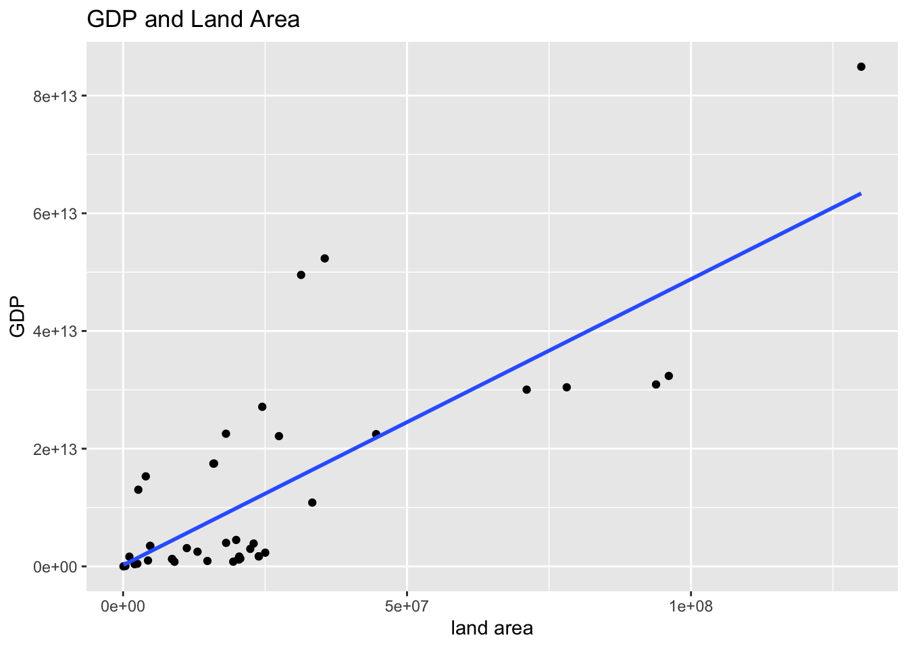
gdp_land <-wb_ag20 %>% lm(gdp ~ land, .)
summary(gdp_land)##
## Call:
## lm(formula = gdp ~ land, data = .)
##
## Residuals:
## Min 1Q Median 3Q Max
## -1.602e+13 -8.384e+12 -3.710e+12 7.025e+11 3.581e+13
##
## Coefficients:
## Estimate Std. Error t value Pr(>|t|)
## (Intercept) 4.155e+11 2.522e+12 0.165 0.87
## land 4.957e+05 6.709e+04 7.389 3.09e-09 ***
## ---
## Signif. codes: 0 '***' 0.001 '**' 0.01 '*' 0.05 '.' 0.1 ' ' 1
##
## Residual standard error: 1.236e+13 on 44 degrees of freedom
## (1 observation deleted due to missingness)
## Multiple R-squared: 0.5537, Adjusted R-squared: 0.5436
## F-statistic: 54.59 on 1 and 44 DF, p-value: 3.093e-09gdp_pop_and_land <-wb_ag20 %>% lm(gdp ~ pop + land, .)
summary(gdp_pop_and_land)##
## Call:
## lm(formula = gdp ~ pop + land, data = .)
##
## Residuals:
## Min 1Q Median 3Q Max
## -1.418e+13 -9.476e+12 -3.687e+12 5.531e+12 3.287e+13
##
## Coefficients:
## Estimate Std. Error t value Pr(>|t|)
## (Intercept) 3.556e+11 2.510e+12 0.142 0.888013
## pop -3.064e+03 2.571e+03 -1.192 0.239891
## land 6.887e+05 1.752e+05 3.932 0.000302 ***
## ---
## Signif. codes: 0 '***' 0.001 '**' 0.01 '*' 0.05 '.' 0.1 ' ' 1
##
## Residual standard error: 1.231e+13 on 43 degrees of freedom
## (1 observation deleted due to missingness)
## Multiple R-squared: 0.568, Adjusted R-squared: 0.5479
## F-statistic: 28.27 on 2 and 43 DF, p-value: 1.457e-08gpa_models <- list(gdp_pop = gdp_pop, gdp_land = gdp_land, gdp_pop_and_land = gdp_pop_and_land)
msummary(gpa_models, statistic = 'p.value')| gdp_pop | gdp_land | gdp_pop_and_land | |
|---|---|---|---|
| (Intercept) | 3.137175e+12 | 4.154638e+11 | 3.555899e+11 |
| (0.265) | (0.870) | (0.888) | |
| pop | 6.281004e+03 | −3.063852e+03 | |
| (0.000) | (0.240) | ||
| land | 4.956974e+05 | 6.886771e+05 | |
| (0.000) | (0.000) | ||
| Num.Obs. | 46 | 46 | 46 |
| R2 | 0.413 | 0.554 | 0.568 |
| R2 Adj. | 0.399 | 0.544 | 0.548 |
| AIC | 2920.5 | 2907.9 | 2908.4 |
| BIC | 2926.0 | 2913.4 | 2915.7 |
| Log.Lik. | −1457.275 | −1450.958 | −1450.211 |
| RMSE | 1.387274e+13 | 1.209279e+13 | 1.189789e+13 |
- The default is:
msummary(gpa_models).msummary(gpa_models, statistic = 'p.value')replaces the standard error by p-value. Compare the following with the one above and theStd.Errorof the summaries of each model.
msummary(gpa_models)| gdp_pop | gdp_land | gdp_pop_and_land | |
|---|---|---|---|
| (Intercept) | 3.137175e+12 | 4.154638e+11 | 3.555899e+11 |
| (2.776134e+12) | (2.521673e+12) | (2.510218e+12) | |
| pop | 6.281004e+03 | −3.063852e+03 | |
| (1.129663e+03) | (2.570859e+03) | ||
| land | 4.956974e+05 | 6.886771e+05 | |
| (6.708982e+04) | (1.751547e+05) | ||
| Num.Obs. | 46 | 46 | 46 |
| R2 | 0.413 | 0.554 | 0.568 |
| R2 Adj. | 0.399 | 0.544 | 0.548 |
| AIC | 2920.5 | 2907.9 | 2908.4 |
| BIC | 2926.0 | 2913.4 | 2915.7 |
| Log.Lik. | −1457.275 | −1450.958 | −1450.211 |
| RMSE | 1.387274e+13 | 1.209279e+13 | 1.189789e+13 |
wb_ag20 %>% ggplot(aes(pop, land)) +
geom_point() +
geom_smooth(method = "lm", se = FALSE) +
labs(title = "population and Land",
x = "population", y = "land")## `geom_smooth()` using formula 'y ~ x'## Warning: Removed 1 rows containing non-finite values (stat_smooth).## Warning: Removed 1 rows containing missing values (geom_point).7.1.3 Checking for multicollinearity
pop_land <-wb_ag20 %>% lm(pop ~ land, .)
summary(pop_land)##
## Call:
## lm(formula = pop ~ land, data = .)
##
## Residuals:
## Min 1Q Median 3Q Max
## -990229492 -397218543 -139396054 291973997 1773586764
##
## Coefficients:
## Estimate Std. Error t value Pr(>|t|)
## (Intercept) -1.954e+07 1.472e+08 -0.133 0.895
## land 6.299e+01 3.916e+00 16.086 <2e-16 ***
## ---
## Signif. codes: 0 '***' 0.001 '**' 0.01 '*' 0.05 '.' 0.1 ' ' 1
##
## Residual standard error: 721600000 on 44 degrees of freedom
## (1 observation deleted due to missingness)
## Multiple R-squared: 0.8547, Adjusted R-squared: 0.8514
## F-statistic: 258.8 on 1 and 44 DF, p-value: < 2.2e-167.1.4 vif: Determination of multi-collinearity
VIF = 1/(1-{Ri}2)
7.1.4.2 Conclusion
- Regions which have large population have large GDP.
- It was also found that the larger the region, the more populated the region. This suggests that the GPs of regions with large regions and large populations are significant.
- This result suggests a positive relationship between population and economic activity.
7.2 A time series data of World from 1960 to 2020
wb_world <- wb %>% filter(country=="World") %>% arrange(year)
wb_world## # A tibble: 61 × 15
## iso2c country year status lastupdated gdp pop land iso3c region
## <chr> <chr> <int> <chr> <chr> <dbl> <dbl> <dbl> <chr> <chr>
## 1 1W World 1960 "" 2022-09-16 1.39e12 3.03e9 NA WLD Aggre…
## 2 1W World 1961 "" 2022-09-16 1.45e12 3.07e9 1.30e8 WLD Aggre…
## 3 1W World 1962 "" 2022-09-16 1.55e12 3.12e9 1.30e8 WLD Aggre…
## 4 1W World 1963 "" 2022-09-16 1.67e12 3.19e9 1.30e8 WLD Aggre…
## 5 1W World 1964 "" 2022-09-16 1.83e12 3.26e9 1.30e8 WLD Aggre…
## 6 1W World 1965 "" 2022-09-16 1.99e12 3.32e9 1.30e8 WLD Aggre…
## 7 1W World 1966 "" 2022-09-16 2.16e12 3.39e9 1.30e8 WLD Aggre…
## 8 1W World 1967 "" 2022-09-16 2.30e12 3.46e9 1.30e8 WLD Aggre…
## 9 1W World 1968 "" 2022-09-16 2.48e12 3.53e9 1.30e8 WLD Aggre…
## 10 1W World 1969 "" 2022-09-16 2.74e12 3.61e9 1.30e8 WLD Aggre…
## # … with 51 more rows, and 5 more variables: capital <chr>, longitude <chr>,
## # latitude <chr>, income <chr>, lending <chr>wb_world %>% ggplot() +
geom_line(aes(x = year, y = gdp)) +
labs(title = "GDP (current US$)")
wb_world %>% ggplot() +
geom_line(aes(x = year, y = pop)) +
labs(title = "Total population)")
wb_world %>% lm(gdp ~ pop, .) %>% summary()##
## Call:
## lm(formula = gdp ~ pop, data = .)
##
## Residuals:
## Min 1Q Median 3Q Max
## -1.334e+13 -7.513e+12 -1.944e+12 6.913e+12 1.350e+13
##
## Coefficients:
## Estimate Std. Error t value Pr(>|t|)
## (Intercept) -6.857e+13 4.151e+12 -16.52 <2e-16 ***
## pop 1.862e+04 7.563e+02 24.63 <2e-16 ***
## ---
## Signif. codes: 0 '***' 0.001 '**' 0.01 '*' 0.05 '.' 0.1 ' ' 1
##
## Residual standard error: 8.396e+12 on 59 degrees of freedom
## Multiple R-squared: 0.9113, Adjusted R-squared: 0.9098
## F-statistic: 606.4 on 1 and 59 DF, p-value: < 2.2e-16wb_world %>% ggplot() +
geom_point(aes(pop, gdp)) +
labs(title = "World GDP and World population",
x = "Total population", y = "GDP (current US$)")
wb_world_extra <- wb_world %>% mutate(diff_gdp = gdp - lag(gdp), diff_pop = pop - lag(pop))
wb_world_extra## # A tibble: 61 × 17
## iso2c country year status lastupdated gdp pop land iso3c region
## <chr> <chr> <int> <chr> <chr> <dbl> <dbl> <dbl> <chr> <chr>
## 1 1W World 1960 "" 2022-09-16 1.39e12 3.03e9 NA WLD Aggre…
## 2 1W World 1961 "" 2022-09-16 1.45e12 3.07e9 1.30e8 WLD Aggre…
## 3 1W World 1962 "" 2022-09-16 1.55e12 3.12e9 1.30e8 WLD Aggre…
## 4 1W World 1963 "" 2022-09-16 1.67e12 3.19e9 1.30e8 WLD Aggre…
## 5 1W World 1964 "" 2022-09-16 1.83e12 3.26e9 1.30e8 WLD Aggre…
## 6 1W World 1965 "" 2022-09-16 1.99e12 3.32e9 1.30e8 WLD Aggre…
## 7 1W World 1966 "" 2022-09-16 2.16e12 3.39e9 1.30e8 WLD Aggre…
## 8 1W World 1967 "" 2022-09-16 2.30e12 3.46e9 1.30e8 WLD Aggre…
## 9 1W World 1968 "" 2022-09-16 2.48e12 3.53e9 1.30e8 WLD Aggre…
## 10 1W World 1969 "" 2022-09-16 2.74e12 3.61e9 1.30e8 WLD Aggre…
## # … with 51 more rows, and 7 more variables: capital <chr>, longitude <chr>,
## # latitude <chr>, income <chr>, lending <chr>, diff_gdp <dbl>, diff_pop <dbl>wb_world_extra %>% ggplot(aes(x = year, y = diff_gdp)) + geom_line() +
labs(title = "World GDP changes", y = "gdp changes")## Warning: Removed 1 row(s) containing missing values (geom_path).
wb_world_extra %>% ggplot(aes(x = year, y = diff_pop)) + geom_line() +
labs(title = "World population changes", y = "population changes")## Warning: Removed 1 row(s) containing missing values (geom_path).
wb_world_extra %>% ggplot(aes(x = diff_pop, y = diff_gdp)) + geom_point() +
geom_smooth(method = "lm", se = FALSE) +
labs(title = "World GDP changes and World GDP changes", x = "population changes", y = "GDP changes") ## `geom_smooth()` using formula 'y ~ x'## Warning: Removed 1 rows containing non-finite values (stat_smooth).## Warning: Removed 1 rows containing missing values (geom_point).
wb_world_extra %>% lm(diff_gdp ~ diff_pop, .) %>% summary()##
## Call:
## lm(formula = diff_gdp ~ diff_pop, data = .)
##
## Residuals:
## Min 1Q Median 3Q Max
## -6.350e+12 -9.506e+11 -3.699e+11 3.100e+11 5.679e+12
##
## Coefficients:
## Estimate Std. Error t value Pr(>|t|)
## (Intercept) -3.460e+12 2.553e+12 -1.355 0.1806
## diff_pop 6.152e+04 3.219e+04 1.911 0.0609 .
## ---
## Signif. codes: 0 '***' 0.001 '**' 0.01 '*' 0.05 '.' 0.1 ' ' 1
##
## Residual standard error: 2.114e+12 on 58 degrees of freedom
## (1 observation deleted due to missingness)
## Multiple R-squared: 0.05925, Adjusted R-squared: 0.04303
## F-statistic: 3.653 on 1 and 58 DF, p-value: 0.060927.3 Regression 2 : CO2 Emission
7.3.1 Project
Problem: “What are the causes of increased CO2 emissions?”
Plan: To develop and test the hypothesis that CO2 emissions depends on GDP, population and land under cereal production of each region.
Data: Using the World Bank’s World Development Indicators (WDI), we will collect data on GDP, population and land area for regions around the world.
- WDIindicators
- GDP(Y):“NY.GDP.MKTP.CD”
- Total Population (X1): “SP.POP.TOTL”
- Land under cereal production (hectares): “AG.LND.CREL.HA”
7.3.1.1 Regression Analysis
- Regression equation:Y =c + a x1 + b x2 + d x3 Y: CO2 emission: independent variable
- x1: GDP (Y) : independent variable
- x2: Total Population (X1) : independent variable x3: Land under cereal production (hectares): independent variable
- We perform a regression analysis of the above regression equation (estimate the parameters, c (intercept), a, b, d) and elect the best model.
7.3.1.2 WDI Indicator cordes
- co2 = EN.ATM.CO2E.KT: CO2 Emission
- gdp = NY.GDP.MKTP.CD: GDP (current USD)
- pop = SP.POP.TOTL: Total Population
- cereal = AG.LND.CREL.HA: Land under cereal production (hectares)
WDIsearch(string = "EN.ATM.CO2E.KT", field = "indicator", short = FALSE)[[3]]## [1] "Carbon dioxide emissions are those stemming from the burning of fossil fuels and the manufacture of cement. They include carbon dioxide produced during consumption of solid, liquid, and gas fuels and gas flaring."wb_co2<- as_tibble(WDI(country="all",
indicator=c(co2 = "EN.ATM.CO2E.KT",
gdp = "NY.GDP.MKTP.CD",
pop = "SP.POP.TOTL",
cereal = "AG.LND.CREL.HA"),
start=1960,
end=2020,
extra=TRUE))
wb_co2## # A tibble: 16,226 × 16
## iso2c country year status lastu…¹ co2 gdp pop cereal iso3c region
## <chr> <chr> <int> <chr> <chr> <dbl> <dbl> <dbl> <dbl> <chr> <chr>
## 1 1A Arab W… 1963 "" 2022-0… NA NA 1.00e8 1.83e7 ARB Aggre…
## 2 1A Arab W… 1960 "" 2022-0… NA NA 9.22e7 NA ARB Aggre…
## 3 1A Arab W… 1971 "" 2022-0… NA 4.98e10 1.25e8 1.70e7 ARB Aggre…
## 4 1A Arab W… 1972 "" 2022-0… NA 5.94e10 1.29e8 1.88e7 ARB Aggre…
## 5 1A Arab W… 1961 "" 2022-0… NA NA 9.47e7 1.67e7 ARB Aggre…
## 6 1A Arab W… 1962 "" 2022-0… NA NA 9.73e7 1.73e7 ARB Aggre…
## 7 1A Arab W… 1975 "" 2022-0… NA 1.58e11 1.40e8 1.87e7 ARB Aggre…
## 8 1A Arab W… 1976 "" 2022-0… NA 1.97e11 1.44e8 2.01e7 ARB Aggre…
## 9 1A Arab W… 1973 "" 2022-0… NA 7.53e10 1.32e8 1.78e7 ARB Aggre…
## 10 1A Arab W… 1974 "" 2022-0… NA 1.43e11 1.36e8 1.84e7 ARB Aggre…
## # … with 16,216 more rows, 5 more variables: capital <chr>, longitude <chr>,
## # latitude <chr>, income <chr>, lending <chr>, and abbreviated variable name
## # ¹lastupdatedIn the lecture the folloiwng is used. However, regions are overlapping and it seems to be better to chooose non-aggregated data.
wb_co2_16 <- wb_co2 %>% filter(year == 2016 & region=="Aggregates")
wb_co2_16## # A tibble: 47 × 16
## iso2c country year status lastu…¹ co2 gdp pop cereal iso3c region
## <chr> <chr> <int> <chr> <chr> <dbl> <dbl> <dbl> <dbl> <chr> <chr>
## 1 1A Arab Wo… 2016 "" 2022-0… 1.84e6 2.50e12 4.04e8 2.95e7 ARB Aggre…
## 2 1W World 2016 "" 2022-0… 3.30e7 7.65e13 7.43e9 7.29e8 WLD Aggre…
## 3 4E East As… 2016 "" 2022-0… 1.13e7 1.36e13 2.06e9 1.60e8 EAP Aggre…
## 4 7E Europe … 2016 "" 2022-0… 2.78e6 2.78e12 3.93e8 9.76e7 ECA Aggre…
## 5 8S South A… 2016 "" 2022-0… 2.49e6 3.01e12 1.77e9 1.32e8 SAS Aggre…
## 6 B8 Central… 2016 "" 2022-0… 6.56e5 1.32e12 1.03e8 2.24e7 CEB Aggre…
## 7 EU Europea… 2016 "" 2022-0… 2.91e6 1.39e13 4.45e8 5.41e7 EUU Aggre…
## 8 F1 Fragile… 2016 "" 2022-0… 6.95e5 1.55e12 8.82e8 1.10e8 FCS Aggre…
## 9 OE OECD me… 2016 "" 2022-0… 1.20e7 4.84e13 1.34e9 1.65e8 OED Aggre…
## 10 S1 Small s… 2016 "" 2022-0… 2.29e5 4.45e11 3.92e7 1.70e6 SST Aggre…
## # … with 37 more rows, 5 more variables: capital <chr>, longitude <chr>,
## # latitude <chr>, income <chr>, lending <chr>, and abbreviated variable name
## # ¹lastupdatedwb_co2 %>% filter(region != "Aggregates", !is.na(co2)) %>%
group_by(year) %>% summarize(n = n_distinct(country)) %>% arrange(desc(n), desc(year))## # A tibble: 30 × 2
## year n
## <int> <int>
## 1 2019 190
## 2 2018 190
## 3 2017 190
## 4 2016 190
## 5 2015 190
## 6 2014 190
## 7 2013 190
## 8 2012 190
## 9 2011 190
## 10 2010 190
## # … with 20 more rowsLet us choose non-aggregated data in 2018.
wb_co2_18 <- wb_co2 %>% filter(region != "Aggregates", !is.na(co2), year == 2018)
wb_co2_18## # A tibble: 190 × 16
## iso2c country year status lastu…¹ co2 gdp pop cereal iso3c region
## <chr> <chr> <int> <chr> <chr> <dbl> <dbl> <dbl> <dbl> <chr> <chr>
## 1 AD Andorra 2018 "" 2022-0… 4.90e2 3.22e 9 7.70e4 NA AND Europ…
## 2 AE United… 2018 "" 2022-0… 1.77e5 4.22e11 9.63e6 3.92e2 ARE Middl…
## 3 AF Afghan… 2018 "" 2022-0… 6.07e3 1.81e10 3.72e7 1.91e6 AFG South…
## 4 AG Antigu… 2018 "" 2022-0… 5.10e2 1.61e 9 9.63e4 2.4 e1 ATG Latin…
## 5 AL Albania 2018 "" 2022-0… 5.11e3 1.52e10 2.87e6 1.40e5 ALB Europ…
## 6 AM Armenia 2018 "" 2022-0… 5.71e3 1.25e10 2.95e6 1.27e5 ARM Europ…
## 7 AO Angola 2018 "" 2022-0… 2.40e4 7.78e10 3.08e7 3.06e6 AGO Sub-S…
## 8 AR Argent… 2018 "" 2022-0… 1.77e5 5.25e11 4.45e7 1.51e7 ARG Latin…
## 9 AT Austria 2018 "" 2022-0… 6.31e4 4.55e11 8.84e6 7.79e5 AUT Europ…
## 10 AU Austra… 2018 "" 2022-0… 3.87e5 1.43e12 2.50e7 1.66e7 AUS East …
## # … with 180 more rows, 5 more variables: capital <chr>, longitude <chr>,
## # latitude <chr>, income <chr>, lending <chr>, and abbreviated variable name
## # ¹lastupdated7.3.2 Regression
wb_co2_18 %>% ggplot(aes(gdp, co2)) + geom_point() +
geom_smooth(method = "lm", se = FALSE) +
labs(title = "CO2 emission and GDP")## `geom_smooth()` using formula 'y ~ x'## Warning: Removed 4 rows containing non-finite values (stat_smooth).## Warning: Removed 4 rows containing missing values (geom_point).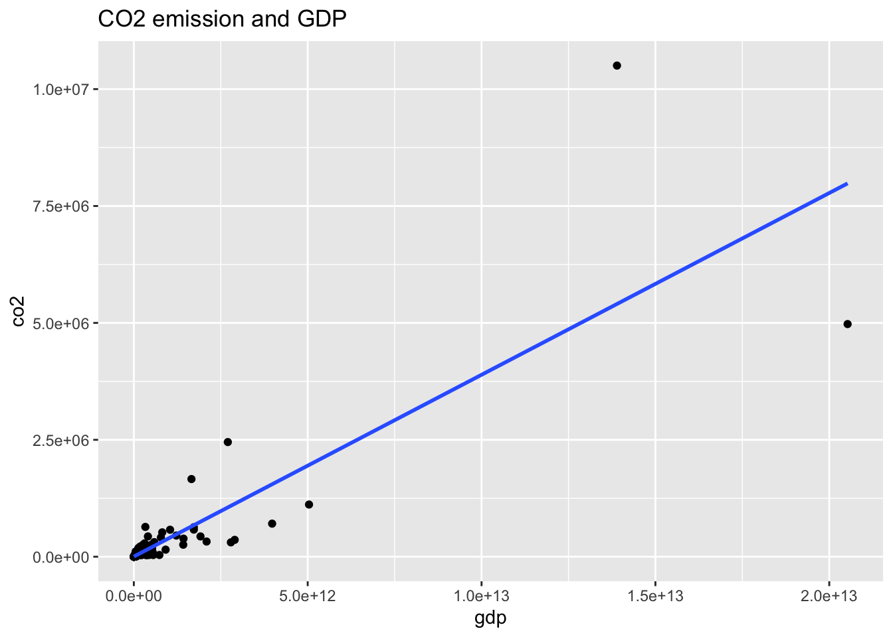
wb_co2_18 %>% ggplot(aes(gdp, co2)) + geom_point() +
geom_smooth(method = "lm", se = FALSE) +
scale_x_log10() + scale_y_log10() +
labs(title = "CO2 emission and GDP in Log-Log scale")## `geom_smooth()` using formula 'y ~ x'## Warning: Removed 4 rows containing non-finite values (stat_smooth).## Warning: Removed 4 rows containing missing values (geom_point).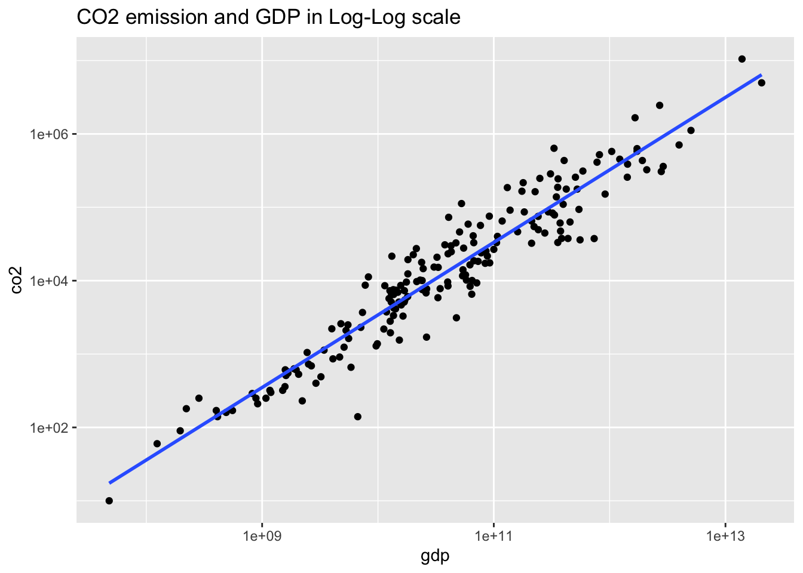 Let us take log-log plot
wb_co2_18 %>% ggplot(aes(pop, co2)) + geom_point() +
geom_smooth(method = "lm", se = FALSE) +
scale_x_log10() + scale_y_log10() +
labs(title = "CO2 emission and Population in Log-Log scale")## `geom_smooth()` using formula 'y ~ x'## Warning: Removed 1 rows containing non-finite values (stat_smooth).## Warning: Removed 1 rows containing missing values (geom_point).
wb_co2_18 %>% ggplot(aes(cereal, co2)) + geom_point() +
geom_smooth(method = "lm", se = FALSE) +
scale_x_log10() + scale_y_log10() +
labs(title = "CO2 emission and Land under cereal production in Log-Log scale")## Warning: Transformation introduced infinite values in continuous x-axis
## Transformation introduced infinite values in continuous x-axis## `geom_smooth()` using formula 'y ~ x'## Warning: Removed 16 rows containing non-finite values (stat_smooth).## Warning: Removed 14 rows containing missing values (geom_point).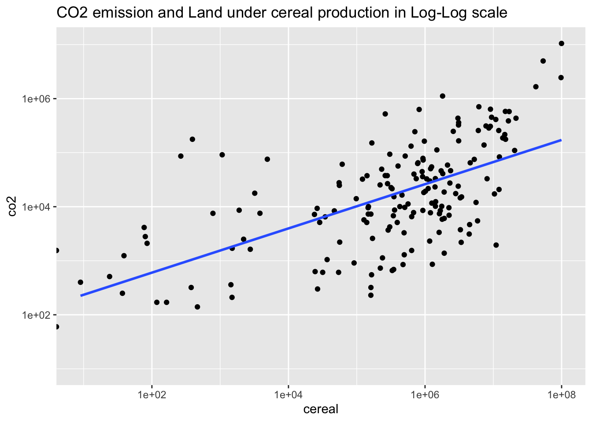
wb_co2_18m <- wb_co2_18 %>% filter(!is.na(co2), !is.na(gdp), !is.na(pop), !is.na(cereal), cereal > 0)
co2_gdp <- wb_co2_18m %>% lm(log10(co2) ~ log10(gdp), .)
co2_pop <- wb_co2_18m %>% lm(log10(co2) ~ log10(pop), .)
co2_cereal <- wb_co2_18m %>% lm(log10(co2) ~ log10(cereal), .)
co2_gdp_pop <- wb_co2_18m %>% lm(log10(co2) ~ log10(gdp) + log10(pop), .)
co2_gdp_cereal <- wb_co2_18m %>% lm(log10(co2) ~ log10(gdp) + log10(cereal), .)
co2_pop_cereal <- wb_co2_18m %>% lm(log10(co2) ~ log10(pop) + log10(cereal), .)
co2_all <- wb_co2_18m %>% lm(log10(co2) ~ log10(gdp) + log10(pop) + log10(cereal), .)msummary(list(gdp = co2_gdp, pop = co2_pop, cereal = co2_cereal, gdp_pop = co2_gdp_pop, gdp_cereal = co2_gdp_cereal, pop_cereal = co2_pop_cereal, all = co2_all))| gdp | pop | cereal | gdp_pop | gdp_cereal | pop_cereal | all | |
|---|---|---|---|---|---|---|---|
| (Intercept) | −6.330 | −2.297 | 1.967 | −6.333 | −6.136 | −2.840 | −6.311 |
| (0.271) | (0.421) | (0.240) | (0.264) | (0.279) | (0.520) | (0.292) | |
| log10(gdp) | 0.987 | 0.899 | 0.944 | 0.900 | |||
| (0.025) | (0.038) | (0.031) | (0.039) | ||||
| log10(pop) | 0.939 | 0.136 | 1.104 | 0.127 | |||
| (0.060) | (0.044) | (0.111) | (0.068) | ||||
| log10(cereal) | 0.410 | 0.048 | −0.109 | 0.005 | |||
| (0.042) | (0.020) | (0.062) | (0.030) | ||||
| Num.Obs. | 170 | 170 | 170 | 170 | 170 | 170 | 170 |
| R2 | 0.901 | 0.592 | 0.362 | 0.907 | 0.905 | 0.599 | 0.907 |
| R2 Adj. | 0.901 | 0.589 | 0.358 | 0.905 | 0.903 | 0.594 | 0.905 |
| AIC | 3683.4 | 3924.8 | 4000.7 | 3676.2 | 3679.6 | 3923.7 | 3678.1 |
| BIC | 3692.8 | 3934.2 | 4010.1 | 3688.7 | 3692.2 | 3936.2 | 3693.8 |
| Log.Lik. | −40.453 | −161.134 | −199.096 | −35.814 | −37.559 | −159.566 | −35.797 |
| RMSE | 0.31 | 0.62 | 0.78 | 0.30 | 0.30 | 0.62 | 0.30 |
vif(co2_gdp_pop)## log10(gdp) log10(pop)
## 2.374532 2.374532vif(co2_gdp_cereal)## log10(gdp) log10(cereal)
## 1.5193 1.5193vif(co2_pop_cereal)## log10(pop) log10(cereal)
## 3.447368 3.447368vif(co2_all)## log10(gdp) log10(pop) log10(cereal)
## 2.438050 5.532058 3.539584list(gdp_pop = vif(co2_gdp_pop), gdp_cereal = vif(co2_gdp_cereal), pop_cereal = vif(co2_pop_cereal), all = vif(co2_all))## $gdp_pop
## log10(gdp) log10(pop)
## 2.374532 2.374532
##
## $gdp_cereal
## log10(gdp) log10(cereal)
## 1.5193 1.5193
##
## $pop_cereal
## log10(pop) log10(cereal)
## 3.447368 3.447368
##
## $all
## log10(gdp) log10(pop) log10(cereal)
## 2.438050 5.532058 3.5395847.3.2.1 We select regression model;
CO2 emission = c + a (GDP) + b (population)
(Omit land because of multicollinearity)
7.3.2.2 A time series data of World from 1960 to 2020
wb_co2_world <- wb_co2 %>% filter(country=="World")
wb_co2_world ## # A tibble: 61 × 16
## iso2c country year status lastu…¹ co2 gdp pop cereal iso3c region
## <chr> <chr> <int> <chr> <chr> <dbl> <dbl> <dbl> <dbl> <chr> <chr>
## 1 1W World 1975 "" 2022-0… NA 5.98e12 4.06e9 5.73e8 WLD Aggre…
## 2 1W World 1977 "" 2022-0… NA 7.35e12 4.21e9 5.78e8 WLD Aggre…
## 3 1W World 1979 "" 2022-0… NA 1.01e13 4.36e9 5.70e8 WLD Aggre…
## 4 1W World 1976 "" 2022-0… NA 6.50e12 4.14e9 5.84e8 WLD Aggre…
## 5 1W World 1986 "" 2022-0… NA 1.52e13 4.92e9 5.89e8 WLD Aggre…
## 6 1W World 1978 "" 2022-0… NA 8.66e12 4.28e9 5.76e8 WLD Aggre…
## 7 1W World 1987 "" 2022-0… NA 1.73e13 5.01e9 5.73e8 WLD Aggre…
## 8 1W World 1980 "" 2022-0… NA 1.13e13 4.43e9 5.79e8 WLD Aggre…
## 9 1W World 1989 "" 2022-0… NA 2.02e13 5.19e9 5.90e8 WLD Aggre…
## 10 1W World 1990 "" 2022-0… 2.06e7 2.28e13 5.28e9 5.89e8 WLD Aggre…
## # … with 51 more rows, 5 more variables: capital <chr>, longitude <chr>,
## # latitude <chr>, income <chr>, lending <chr>, and abbreviated variable name
## # ¹lastupdatedwb_co2_world %>% ggplot() +
geom_line(aes(x = year, y = co2)) +
labs(title = "Co2 Emmision of the World")## Warning: Removed 31 row(s) containing missing values (geom_path).
wb_co2_world %>% ggplot() +
geom_line(aes(x = year, y = gdp)) +
labs(title = "GDP (current US$)")
wb_co2_world_extra <- wb_co2_world %>%
mutate(diff_co2 = co2 - lag(co2), diff_gdp = gdp - lag(gdp))
wb_co2_world_extra## # A tibble: 61 × 18
## iso2c country year status lastu…¹ co2 gdp pop cereal iso3c region
## <chr> <chr> <int> <chr> <chr> <dbl> <dbl> <dbl> <dbl> <chr> <chr>
## 1 1W World 1975 "" 2022-0… NA 5.98e12 4.06e9 5.73e8 WLD Aggre…
## 2 1W World 1977 "" 2022-0… NA 7.35e12 4.21e9 5.78e8 WLD Aggre…
## 3 1W World 1979 "" 2022-0… NA 1.01e13 4.36e9 5.70e8 WLD Aggre…
## 4 1W World 1976 "" 2022-0… NA 6.50e12 4.14e9 5.84e8 WLD Aggre…
## 5 1W World 1986 "" 2022-0… NA 1.52e13 4.92e9 5.89e8 WLD Aggre…
## 6 1W World 1978 "" 2022-0… NA 8.66e12 4.28e9 5.76e8 WLD Aggre…
## 7 1W World 1987 "" 2022-0… NA 1.73e13 5.01e9 5.73e8 WLD Aggre…
## 8 1W World 1980 "" 2022-0… NA 1.13e13 4.43e9 5.79e8 WLD Aggre…
## 9 1W World 1989 "" 2022-0… NA 2.02e13 5.19e9 5.90e8 WLD Aggre…
## 10 1W World 1990 "" 2022-0… 2.06e7 2.28e13 5.28e9 5.89e8 WLD Aggre…
## # … with 51 more rows, 7 more variables: capital <chr>, longitude <chr>,
## # latitude <chr>, income <chr>, lending <chr>, diff_co2 <dbl>,
## # diff_gdp <dbl>, and abbreviated variable name ¹lastupdatedwb_co2_world_extra %>% ggplot(aes(x = year, y = diff_co2)) + geom_line() +
labs(title = "Changes of World CO2 emission")## Warning: Removed 32 row(s) containing missing values (geom_path).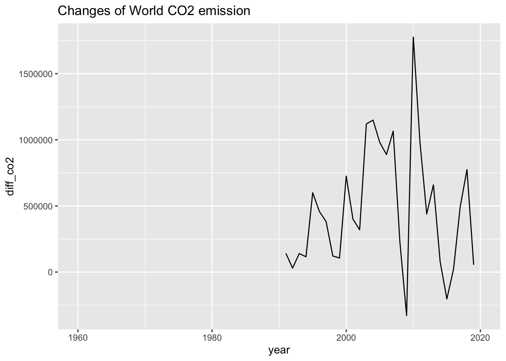
wb_co2_world_extra %>% ggplot(aes(x = year, y = diff_gdp)) + geom_line() +
labs(title = "Changes of World GDP")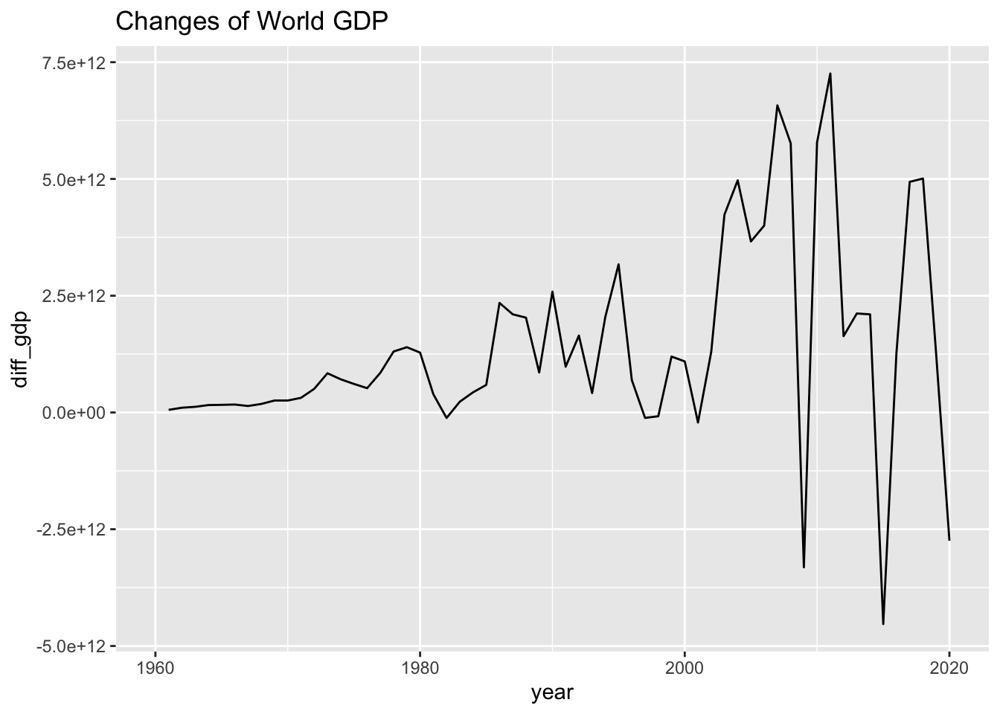
wb_co2_world_extra %>% lm(diff_co2 ~ diff_gdp, .) %>% summary()##
## Call:
## lm(formula = diff_co2 ~ diff_gdp, data = .)
##
## Residuals:
## Min 1Q Median 3Q Max
## -1694528 -195165 92808 299899 964059
##
## Coefficients:
## Estimate Std. Error t value Pr(>|t|)
## (Intercept) -1.415e+05 1.242e+05 -1.14 0.268
## diff_gdp 2.265e-07 6.717e-09 33.71 <2e-16 ***
## ---
## Signif. codes: 0 '***' 0.001 '**' 0.01 '*' 0.05 '.' 0.1 ' ' 1
##
## Residual standard error: 578100 on 20 degrees of freedom
## (39 observations deleted due to missingness)
## Multiple R-squared: 0.9827, Adjusted R-squared: 0.9818
## F-statistic: 1136 on 1 and 20 DF, p-value: < 2.2e-167.4 Regression 3: CO2 emission (Standardization)
- Prof. Kaizoji provided a data in csv format in Moodle and use scale function to standardize the data, let us proceed one step by one step.
- He starts with a WDI data in 2016 and use the aggregated part. There may be arguments on the set of data, let us use the same one.
- He defines variance in his slides, and the codes below uses unbiased variance. The difference is minor.
wb_co2## # A tibble: 16,226 × 16
## iso2c country year status lastu…¹ co2 gdp pop cereal iso3c region
## <chr> <chr> <int> <chr> <chr> <dbl> <dbl> <dbl> <dbl> <chr> <chr>
## 1 1A Arab W… 1963 "" 2022-0… NA NA 1.00e8 1.83e7 ARB Aggre…
## 2 1A Arab W… 1960 "" 2022-0… NA NA 9.22e7 NA ARB Aggre…
## 3 1A Arab W… 1971 "" 2022-0… NA 4.98e10 1.25e8 1.70e7 ARB Aggre…
## 4 1A Arab W… 1972 "" 2022-0… NA 5.94e10 1.29e8 1.88e7 ARB Aggre…
## 5 1A Arab W… 1961 "" 2022-0… NA NA 9.47e7 1.67e7 ARB Aggre…
## 6 1A Arab W… 1962 "" 2022-0… NA NA 9.73e7 1.73e7 ARB Aggre…
## 7 1A Arab W… 1975 "" 2022-0… NA 1.58e11 1.40e8 1.87e7 ARB Aggre…
## 8 1A Arab W… 1976 "" 2022-0… NA 1.97e11 1.44e8 2.01e7 ARB Aggre…
## 9 1A Arab W… 1973 "" 2022-0… NA 7.53e10 1.32e8 1.78e7 ARB Aggre…
## 10 1A Arab W… 1974 "" 2022-0… NA 1.43e11 1.36e8 1.84e7 ARB Aggre…
## # … with 16,216 more rows, 5 more variables: capital <chr>, longitude <chr>,
## # latitude <chr>, income <chr>, lending <chr>, and abbreviated variable name
## # ¹lastupdatedco2_ag16 <- wb_co2 %>% filter(year == 2016, region=="Aggregates") %>%
select(iso2c, co2, gdp, pop, cereal) %>% drop_na()
co2_ag16## # A tibble: 46 × 5
## iso2c co2 gdp pop cereal
## <chr> <dbl> <dbl> <dbl> <dbl>
## 1 1A 1838603. 2.50e12 404042892 29526231
## 2 1W 33018556. 7.65e13 7433650819 728520338
## 3 4E 11308839. 1.36e13 2062250022 159822459
## 4 7E 2784816. 2.78e12 392836210 97557116
## 5 8S 2491070. 3.01e12 1771187426 132268829
## 6 B8 655580. 1.32e12 102994278 22398322
## 7 EU 2905110. 1.39e13 445487730 54059754
## 8 F1 694941. 1.55e12 881938038 110301901
## 9 OE 11968660. 4.84e13 1341783391 165276397
## 10 S1 229110. 4.45e11 39198032 1700592
## # … with 36 more rowsco2_al16_std <- co2_ag16 %>% mutate(st_co2 = (co2 - mean(co2))/sd(co2),
st_gdp = (gdp - mean(gdp))/sd(gdp),
st_pop = (pop - mean(pop))/sd(pop),
st_cereal = (cereal - mean(cereal))/sd(cereal))
co2_al16_std## # A tibble: 46 × 9
## iso2c co2 gdp pop cereal st_co2 st_gdp st_pop st_cereal
## <chr> <dbl> <dbl> <dbl> <dbl> <dbl> <dbl> <dbl> <dbl>
## 1 1A 1838603. 2.50e12 404042892 29526231 -0.534 -0.569 -0.633 -0.735
## 2 1W 33018556. 7.65e13 7433650819 728520338 3.55 3.93 3.28 3.50
## 3 4E 11308839. 1.36e13 2062250022 159822459 0.706 0.106 0.291 0.0552
## 4 7E 2784816. 2.78e12 392836210 97557116 -0.410 -0.552 -0.640 -0.322
## 5 8S 2491070. 3.01e12 1771187426 132268829 -0.448 -0.538 0.128 -0.112
## 6 B8 655580. 1.32e12 102994278 22398322 -0.689 -0.641 -0.801 -0.778
## 7 EU 2905110. 1.39e13 445487730 54059754 -0.394 0.123 -0.610 -0.586
## 8 F1 694941. 1.55e12 881938038 110301901 -0.683 -0.627 -0.367 -0.245
## 9 OE 11968660. 4.84e13 1341783391 165276397 0.792 2.22 -0.111 0.0882
## 10 S1 229110. 4.45e11 39198032 1700592 -0.744 -0.694 -0.837 -0.903
## # … with 36 more rowsco2_al16_scaled <- co2_ag16 %>% mutate(st_co2 = scale(co2),
st_gdp = scale(gdp),
st_pop = scale(pop),
st_cereal = scale(cereal))
co2_al16_scaled ## # A tibble: 46 × 9
## iso2c co2 gdp pop cereal st_co2…¹ st_gd…² st_po…³ st_ce…⁴
## <chr> <dbl> <dbl> <dbl> <dbl> <dbl> <dbl> <dbl> <dbl>
## 1 1A 1838603. 2.50e12 404042892 29526231 -0.534 -0.569 -0.633 -0.735
## 2 1W 33018556. 7.65e13 7433650819 728520338 3.55 3.93 3.28 3.50
## 3 4E 11308839. 1.36e13 2062250022 159822459 0.706 0.106 0.291 0.0552
## 4 7E 2784816. 2.78e12 392836210 97557116 -0.410 -0.552 -0.640 -0.322
## 5 8S 2491070. 3.01e12 1771187426 132268829 -0.448 -0.538 0.128 -0.112
## 6 B8 655580. 1.32e12 102994278 22398322 -0.689 -0.641 -0.801 -0.778
## 7 EU 2905110. 1.39e13 445487730 54059754 -0.394 0.123 -0.610 -0.586
## 8 F1 694941. 1.55e12 881938038 110301901 -0.683 -0.627 -0.367 -0.245
## 9 OE 11968660. 4.84e13 1341783391 165276397 0.792 2.22 -0.111 0.0882
## 10 S1 229110. 4.45e11 39198032 1700592 -0.744 -0.694 -0.837 -0.903
## # … with 36 more rows, and abbreviated variable names ¹st_co2[,1], ²st_gdp[,1],
## # ³st_pop[,1], ⁴st_cereal[,1]co2_ag16 %>% select(-1) %>% scale() %>% as_tibble()## # A tibble: 46 × 4
## co2 gdp pop cereal
## <dbl> <dbl> <dbl> <dbl>
## 1 -0.534 -0.569 -0.633 -0.735
## 2 3.55 3.93 3.28 3.50
## 3 0.706 0.106 0.291 0.0552
## 4 -0.410 -0.552 -0.640 -0.322
## 5 -0.448 -0.538 0.128 -0.112
## 6 -0.689 -0.641 -0.801 -0.778
## 7 -0.394 0.123 -0.610 -0.586
## 8 -0.683 -0.627 -0.367 -0.245
## 9 0.792 2.22 -0.111 0.0882
## 10 -0.744 -0.694 -0.837 -0.903
## # … with 36 more rowsco2_ag16_rv <- read_csv("data/AGCO2rv.csv") ## Rows: 44 Columns: 4
## ── Column specification ────────────────────────────────────────────────────────────────
## Delimiter: ","
## dbl (4): EN.ATM.CO2E.KT, NY.GDP.MKTP.CD, SP.POP.TOTL, AG.LND.CREL.HA
##
## ℹ Use `spec()` to retrieve the full column specification for this data.
## ℹ Specify the column types or set `show_col_types = FALSE` to quiet this message.co2_ag16_rv## # A tibble: 44 × 4
## EN.ATM.CO2E.KT NY.GDP.MKTP.CD SP.POP.TOTL AG.LND.CREL.HA
## <dbl> <dbl> <dbl> <dbl>
## 1 1846601. 2.40e12 404042892 29143572
## 2 32940650. 7.63e13 7433569330 733367261
## 3 11254611. 1.36e13 2062232304 163412028
## 4 2837305. 2.97e12 412538477 104861504
## 5 2479230 2.93e12 1771187426 132269014
## 6 656330 1.32e12 102994278 22398321
## 7 2904100 1.39e13 445487730 54059756
## 8 733332. 1.41e12 849739853 95574606
## 9 11961830 4.84e13 1341701902 165097397
## 10 228009. 4.45e11 39198032 1809678
## # … with 34 more rowscolnames(co2_ag16_rv) <- c("st_co2", "st_gdp", "st_pop", "st_cereal")
co2_ag16_rv## # A tibble: 44 × 4
## st_co2 st_gdp st_pop st_cereal
## <dbl> <dbl> <dbl> <dbl>
## 1 1846601. 2.40e12 404042892 29143572
## 2 32940650. 7.63e13 7433569330 733367261
## 3 11254611. 1.36e13 2062232304 163412028
## 4 2837305. 2.97e12 412538477 104861504
## 5 2479230 2.93e12 1771187426 132269014
## 6 656330 1.32e12 102994278 22398321
## 7 2904100 1.39e13 445487730 54059756
## 8 733332. 1.41e12 849739853 95574606
## 9 11961830 4.84e13 1341701902 165097397
## 10 228009. 4.45e11 39198032 1809678
## # … with 34 more rows7.4.1 Regression
co2_al16_scaled %>% ggplot(aes(st_gdp, st_co2)) + geom_point() +
geom_smooth(method = "lm", se = FALSE) +
labs(title = "CO2 emission and GDP: Standardized")## `geom_smooth()` using formula 'y ~ x'
co2_al16_scaled %>% ggplot(aes(st_pop, st_co2)) + geom_point() +
geom_smooth(method = "lm", se = FALSE) +
labs(title = "CO2 emission and Population: Standardized")## `geom_smooth()` using formula 'y ~ x'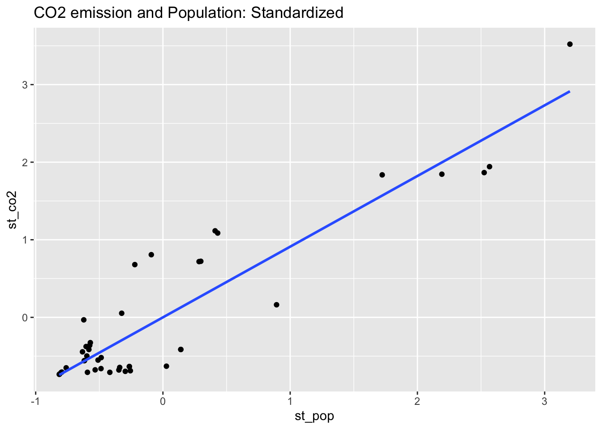
co2_al16_scaled %>% ggplot(aes(st_cereal, st_co2)) + geom_point() +
geom_smooth(method = "lm", se = FALSE) +
labs(title = "CO2 emission and Land under cereal production: Standardized")## `geom_smooth()` using formula 'y ~ x'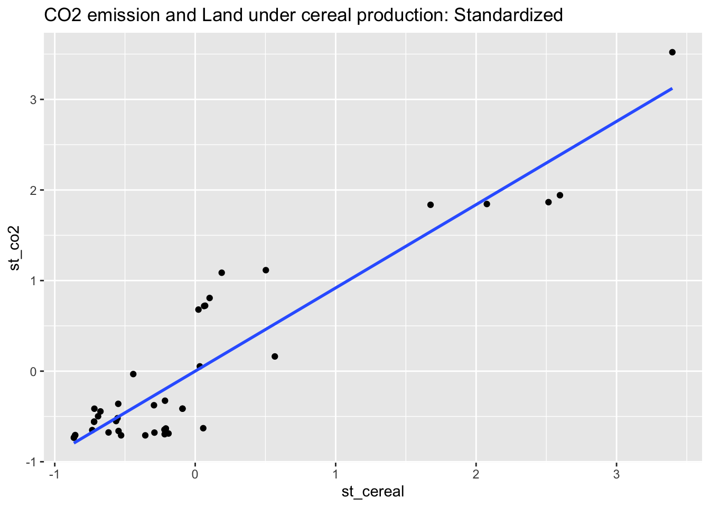
st_co2_gdp <- co2_al16_scaled %>% lm(st_co2 ~ st_gdp, .)
st_co2_pop <- co2_al16_scaled %>% lm(st_co2 ~ st_pop, .)
st_co2_cereal <- co2_al16_scaled %>% lm(st_co2 ~ st_cereal, .)
st_co2_gdp_pop <- co2_al16_scaled %>% lm(st_co2 ~ st_gdp + st_pop, .)
st_co2_gdp_cereal <- co2_al16_scaled %>% lm(st_co2 ~ st_gdp + st_cereal, .)
st_co2_pop_cereal <- co2_al16_scaled %>% lm(st_co2 ~ st_pop + st_cereal, .)
st_co2_all <- co2_al16_scaled %>% lm(st_co2 ~ st_gdp + st_pop + st_cereal, .)msummary(list(st_gdp = st_co2_gdp, st_pop = st_co2_pop, st_cereal = st_co2_cereal, st_gdp_pop = st_co2_gdp_pop, st_gdp_cereal = st_co2_gdp_cereal, st_pop_cereal = st_co2_pop_cereal, st_all = st_co2_all))| st_gdp | st_pop | st_cereal | st_gdp_pop | st_gdp_cereal | st_pop_cereal | st_all | |
|---|---|---|---|---|---|---|---|
| (Intercept) | 0.000 | 0.000 | 0.000 | 0.000 | 0.000 | 0.000 | 0.000 |
| (0.077) | (0.069) | (0.064) | (0.040) | (0.043) | (0.065) | (0.040) | |
| st_gdp | 0.856 | 0.492 | 0.445 | 0.502 | |||
| (0.078) | (0.052) | (0.059) | (0.060) | ||||
| st_pop | 0.886 | 0.575 | −0.182 | 0.658 | |||
| (0.070) | (0.052) | (0.396) | (0.267) | ||||
| st_cereal | 0.903 | 0.597 | 1.083 | −0.090 | |||
| (0.065) | (0.059) | (0.396) | (0.284) | ||||
| Num.Obs. | 46 | 46 | 46 | 46 | 46 | 46 | 46 |
| R2 | 0.732 | 0.785 | 0.816 | 0.930 | 0.920 | 0.817 | 0.931 |
| R2 Adj. | 0.726 | 0.780 | 0.812 | 0.927 | 0.917 | 0.808 | 0.926 |
| AIC | 74.9 | 64.8 | 57.7 | 15.0 | 21.1 | 59.5 | 16.8 |
| BIC | 80.4 | 70.3 | 63.2 | 22.3 | 28.4 | 66.8 | 26.0 |
| Log.Lik. | −34.464 | −29.421 | −25.850 | −3.475 | −6.531 | −25.738 | −3.420 |
| RMSE | 0.51 | 0.46 | 0.42 | 0.26 | 0.28 | 0.42 | 0.26 |
vif(st_co2_gdp_pop)## st_gdp st_pop
## 1.666151 1.666151vif(st_co2_gdp_cereal)## st_gdp st_cereal
## 1.894477 1.894477vif(st_co2_pop_cereal)## st_pop st_cereal
## 36.8198 36.8198vif(st_co2_all)## st_gdp st_pop st_cereal
## 2.213042 43.011208 48.9053607.4.2 Not Standardized
co2_al16 <- wb_co2 %>% filter(region != "Aggregates", year == 2016)
co2_al16## # A tibble: 216 × 16
## iso2c country year status lastu…¹ co2 gdp pop cereal iso3c
## <chr> <chr> <int> <chr> <chr> <dbl> <dbl> <dbl> <dbl> <chr>
## 1 AD Andorra 2016 "" 2022-0… 470. 2.90e 9 7.73e4 NA AND
## 2 AE United Arab … 2016 "" 2022-0… 201080. 3.57e11 9.36e6 1.79e2 ARE
## 3 AF Afghanistan 2016 "" 2022-0… 5300. 1.81e10 3.54e7 2.79e6 AFG
## 4 AG Antigua and … 2016 "" 2022-0… 500 1.44e 9 9.45e4 3.5 e1 ATG
## 5 AL Albania 2016 "" 2022-0… 4480. 1.19e10 2.88e6 1.48e5 ALB
## 6 AM Armenia 2016 "" 2022-0… 5070. 1.05e10 2.94e6 1.95e5 ARM
## 7 AO Angola 2016 "" 2022-0… 29760. 4.98e10 2.88e7 2.73e6 AGO
## 8 AR Argentina 2016 "" 2022-0… 183160. 5.58e11 4.36e7 1.18e7 ARG
## 9 AS American Sam… 2016 "" 2022-0… NA 6.71e 8 5.57e4 NA ASM
## 10 AT Austria 2016 "" 2022-0… 63680. 3.96e11 8.74e6 7.87e5 AUT
## # … with 206 more rows, 6 more variables: region <chr>, capital <chr>,
## # longitude <chr>, latitude <chr>, income <chr>, lending <chr>, and
## # abbreviated variable name ¹lastupdated7.4.3 Regression
co2_al16 %>% ggplot(aes(gdp, co2)) + geom_point() +
geom_smooth(method = "lm", se = FALSE) +
labs(title = "CO2 emission and GDP")## `geom_smooth()` using formula 'y ~ x'## Warning: Removed 30 rows containing non-finite values (stat_smooth).## Warning: Removed 30 rows containing missing values (geom_point).
co2_al16 %>% ggplot(aes(pop, co2)) + geom_point() +
geom_smooth(method = "lm", se = FALSE) +
labs(title = "CO2 emission and Population")## `geom_smooth()` using formula 'y ~ x'## Warning: Removed 27 rows containing non-finite values (stat_smooth).## Warning: Removed 27 rows containing missing values (geom_point).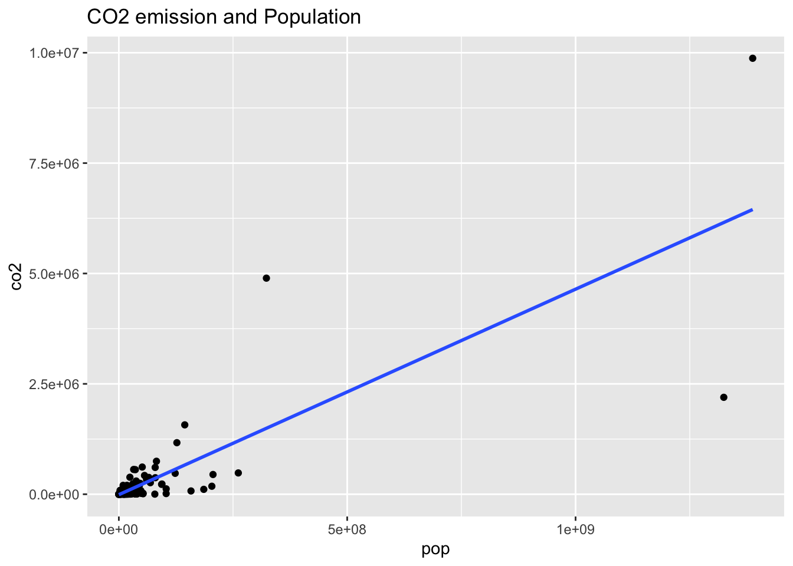
co2_al16 %>% ggplot(aes(cereal, co2)) + geom_point() +
geom_smooth(method = "lm", se = FALSE) +
labs(title = "CO2 emission and Land under cereal production")## `geom_smooth()` using formula 'y ~ x'## Warning: Removed 41 rows containing non-finite values (stat_smooth).## Warning: Removed 41 rows containing missing values (geom_point).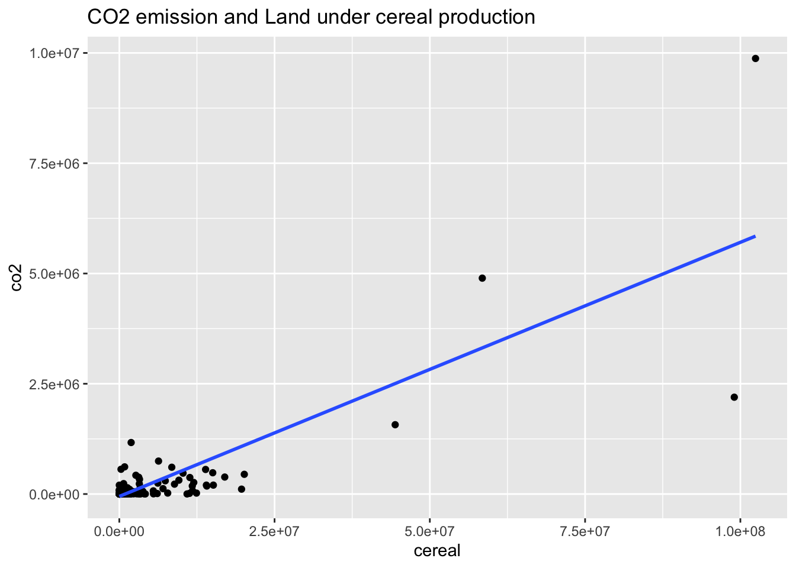
orig_co2_gdp <- wb_co2_18 %>% lm(co2 ~ gdp, .)
orig_co2_pop <- wb_co2_18 %>% lm(co2 ~ pop, .)
orig_co2_cereal <- wb_co2_18 %>% lm(co2 ~ cereal, .)
orig_co2_gdp_pop <- wb_co2_18 %>% lm(co2 ~ gdp + pop, .)
orig_co2_gdp_cereal <- wb_co2_18 %>% lm(co2 ~ gdp + cereal, .)
orig_co2_pop_cereal <- wb_co2_18 %>% lm(co2 ~ pop + cereal, .)
orig_co2_all <- wb_co2_18 %>% lm(co2 ~ gdp + pop + cereal, .)msummary(list(orog_gdp = orig_co2_gdp, orig_pop = orig_co2_pop, orig_cereal = orig_co2_cereal, orig_gdp_pop = orig_co2_gdp_pop, orig_gdp_cereal = orig_co2_gdp_cereal, orig_pop_cereal = orig_co2_pop_cereal, orig_all = orig_co2_all))| orog_gdp | orig_pop | orig_cereal | orig_gdp_pop | orig_gdp_cereal | orig_pop_cereal | orig_all | |
|---|---|---|---|---|---|---|---|
| (Intercept) | 3515.953 | −15951.506 | −63228.012 | −55340.997 | −73957.970 | −52752.510 | −55825.130 |
| (35988.776) | (38195.903) | (40611.145) | (24242.415) | (30130.231) | (40260.650) | (26764.555) | |
| gdp | 0.000 | 0.000 | 0.000 | 0.000 | |||
| (0.000) | (0.000) | (0.000) | (0.000) | ||||
| pop | 0.005 | 0.003 | 0.002 | 0.003 | |||
| (0.000) | (0.000) | (0.001) | (0.000) | ||||
| cereal | 0.062 | 0.036 | 0.039 | −0.005 | |||
| (0.003) | (0.003) | (0.009) | (0.007) | ||||
| Num.Obs. | 186 | 189 | 176 | 186 | 172 | 175 | 172 |
| R2 | 0.708 | 0.666 | 0.684 | 0.871 | 0.835 | 0.697 | 0.872 |
| R2 Adj. | 0.706 | 0.664 | 0.682 | 0.870 | 0.833 | 0.694 | 0.870 |
| AIC | 5396.1 | 5505.5 | 5129.4 | 5245.3 | 4906.9 | 5095.6 | 4865.5 |
| BIC | 5405.8 | 5515.2 | 5138.9 | 5258.2 | 4919.5 | 5108.2 | 4881.2 |
| Log.Lik. | −2695.047 | −2749.741 | −2561.711 | −2618.668 | −2449.437 | −2543.785 | −2427.731 |
| RMSE | 474757.79 | 503810.82 | 506985.87 | 314872.13 | 370265.90 | 497313.02 | 326367.04 |
vif(orig_co2_gdp_pop)## gdp pop
## 1.498289 1.498289vif(orig_co2_gdp_cereal)## gdp cereal
## 1.795285 1.795285vif(orig_co2_pop_cereal)## pop cereal
## 8.098126 8.098126vif(orig_co2_all)## gdp pop cereal
## 1.859018 8.401085 10.1011367.4.3.1 Standadized (Again)
msummary(list(st_gdp = st_co2_gdp, st_pop = st_co2_pop, st_cereal = st_co2_cereal, st_gdp_pop = st_co2_gdp_pop, st_gdp_cereal = st_co2_gdp_cereal, st_pop_cereal = st_co2_pop_cereal, st_all = st_co2_all))| st_gdp | st_pop | st_cereal | st_gdp_pop | st_gdp_cereal | st_pop_cereal | st_all | |
|---|---|---|---|---|---|---|---|
| (Intercept) | 0.000 | 0.000 | 0.000 | 0.000 | 0.000 | 0.000 | 0.000 |
| (0.077) | (0.069) | (0.064) | (0.040) | (0.043) | (0.065) | (0.040) | |
| st_gdp | 0.856 | 0.492 | 0.445 | 0.502 | |||
| (0.078) | (0.052) | (0.059) | (0.060) | ||||
| st_pop | 0.886 | 0.575 | −0.182 | 0.658 | |||
| (0.070) | (0.052) | (0.396) | (0.267) | ||||
| st_cereal | 0.903 | 0.597 | 1.083 | −0.090 | |||
| (0.065) | (0.059) | (0.396) | (0.284) | ||||
| Num.Obs. | 46 | 46 | 46 | 46 | 46 | 46 | 46 |
| R2 | 0.732 | 0.785 | 0.816 | 0.930 | 0.920 | 0.817 | 0.931 |
| R2 Adj. | 0.726 | 0.780 | 0.812 | 0.927 | 0.917 | 0.808 | 0.926 |
| AIC | 74.9 | 64.8 | 57.7 | 15.0 | 21.1 | 59.5 | 16.8 |
| BIC | 80.4 | 70.3 | 63.2 | 22.3 | 28.4 | 66.8 | 26.0 |
| Log.Lik. | −34.464 | −29.421 | −25.850 | −3.475 | −6.531 | −25.738 | −3.420 |
| RMSE | 0.51 | 0.46 | 0.42 | 0.26 | 0.28 | 0.42 | 0.26 |
vif(st_co2_gdp_pop)## st_gdp st_pop
## 1.666151 1.666151vif(st_co2_gdp_cereal)## st_gdp st_cereal
## 1.894477 1.894477vif(st_co2_pop_cereal)## st_pop st_cereal
## 36.8198 36.8198vif(st_co2_all)## st_gdp st_pop st_cereal
## 2.213042 43.011208 48.9053607.5 Regression of Categorical Variables and ANOVA
If you start from here, you need to load the following packages.
library(tidyverse) #tidyverse Package, a collection of packages for data science
library(WDI) #WDI Package for World Development Indicators
library(car) #VIF function
library(modelsummary) #Table of the regression resultswb_co2## # A tibble: 16,226 × 16
## iso2c country year status lastu…¹ co2 gdp pop cereal iso3c region
## <chr> <chr> <int> <chr> <chr> <dbl> <dbl> <dbl> <dbl> <chr> <chr>
## 1 1A Arab W… 1963 "" 2022-0… NA NA 1.00e8 1.83e7 ARB Aggre…
## 2 1A Arab W… 1960 "" 2022-0… NA NA 9.22e7 NA ARB Aggre…
## 3 1A Arab W… 1971 "" 2022-0… NA 4.98e10 1.25e8 1.70e7 ARB Aggre…
## 4 1A Arab W… 1972 "" 2022-0… NA 5.94e10 1.29e8 1.88e7 ARB Aggre…
## 5 1A Arab W… 1961 "" 2022-0… NA NA 9.47e7 1.67e7 ARB Aggre…
## 6 1A Arab W… 1962 "" 2022-0… NA NA 9.73e7 1.73e7 ARB Aggre…
## 7 1A Arab W… 1975 "" 2022-0… NA 1.58e11 1.40e8 1.87e7 ARB Aggre…
## 8 1A Arab W… 1976 "" 2022-0… NA 1.97e11 1.44e8 2.01e7 ARB Aggre…
## 9 1A Arab W… 1973 "" 2022-0… NA 7.53e10 1.32e8 1.78e7 ARB Aggre…
## 10 1A Arab W… 1974 "" 2022-0… NA 1.43e11 1.36e8 1.84e7 ARB Aggre…
## # … with 16,216 more rows, 5 more variables: capital <chr>, longitude <chr>,
## # latitude <chr>, income <chr>, lending <chr>, and abbreviated variable name
## # ¹lastupdatedwb_co2_4anova <- wb_co2 %>% filter(year == 2016, region != "Aggregates") %>%
select(iso2c, co2, gdp, income) %>% drop_na() %>%
mutate(log_co2 = log10(co2), log_gdp = log10(gdp))
wb_co2_4anova## # A tibble: 186 × 6
## iso2c co2 gdp income log_co2 log_gdp
## <chr> <dbl> <dbl> <chr> <dbl> <dbl>
## 1 AD 470. 2.90e 9 High income 2.67 9.46
## 2 AE 201080. 3.57e11 High income 5.30 11.6
## 3 AF 5300. 1.81e10 Low income 3.72 10.3
## 4 AG 500 1.44e 9 High income 2.70 9.16
## 5 AL 4480. 1.19e10 Upper middle income 3.65 10.1
## 6 AM 5070. 1.05e10 Upper middle income 3.71 10.0
## 7 AO 29760. 4.98e10 Lower middle income 4.47 10.7
## 8 AR 183160. 5.58e11 Upper middle income 5.26 11.7
## 9 AT 63680. 3.96e11 High income 4.80 11.6
## 10 AU 384990. 1.21e12 High income 5.59 12.1
## # … with 176 more rowsCO2 <- as_tibble(read.csv("CO2CAPITA.csv"))
CO2
str(CO2)
head(CO2)
tail(CO2)wb_co2_4anova %>% group_by(income) %>%
summarize(n = n_distinct(iso2c), co2_mean = mean(co2), gdp_mean = mean(gdp), log_co2_mean = mean(log_co2), log_gdp_mean = mean(log_gdp))## # A tibble: 4 × 6
## income n co2_mean gdp_mean log_co2_mean log_gdp_mean
## <chr> <int> <dbl> <dbl> <dbl> <dbl>
## 1 High income 56 217188. 857319296294. 4.46 11.1
## 2 Low income 25 5053. 17841983559. 3.39 9.99
## 3 Lower middle income 53 96503. 129620974752. 3.98 10.3
## 4 Upper middle income 52 286264. 375800809797. 4.10 10.47.5.1 Regression
y <- CO2$EN.ATM.CO2E.PC #CO2 Emission per capita
x <- CO2$NY.GDP.PCAP.PP.CD/10000 #GDP per capita, PPP
summary(x)
summary(y)wb_co2_4anova %>% ggplot(aes(log_gdp, log_co2)) +
geom_point() +
geom_smooth(method = "lm", se = FALSE) +
labs(title = "CO2 emission per capita and GDP per capita in log-log scale",
x = "GDP per capita", y = "CO2 emission per capita")## `geom_smooth()` using formula 'y ~ x'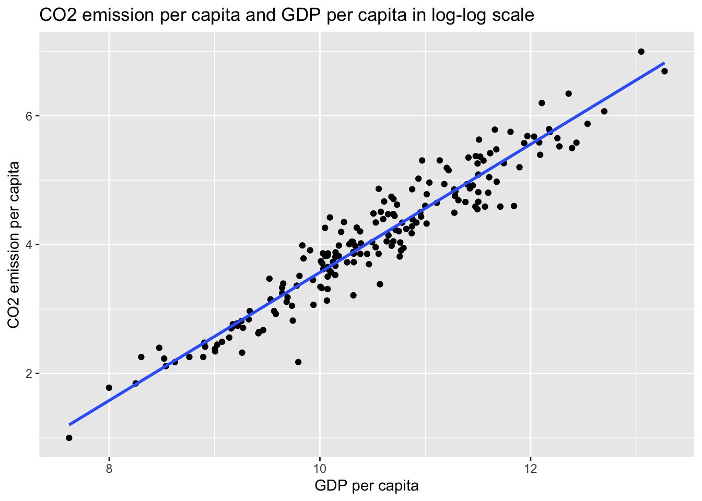
CO2 %>% ggplot(aes(x, y)) +
geom_point() +
geom_smooth(method = "lm", se = FALSE) +
labs(title = "CO2 emission per capita and GDP per capita",
x = "GDP per capita", y = "CO2 emission per capita")
model_1 <-lm(y ~ x, data=CO2)
summary(model_1)
msummary(model_1, statistic = 'p.value')wb_co2_4anova %>% ggplot(aes(x = log_co2, fill = income)) +
geom_histogram( ) ## `stat_bin()` using `bins = 30`. Pick better value with `binwidth`.
wb_co2_4anova %>% ggplot(aes(x = log_co2, y = income, fill = income)) +
geom_boxplot()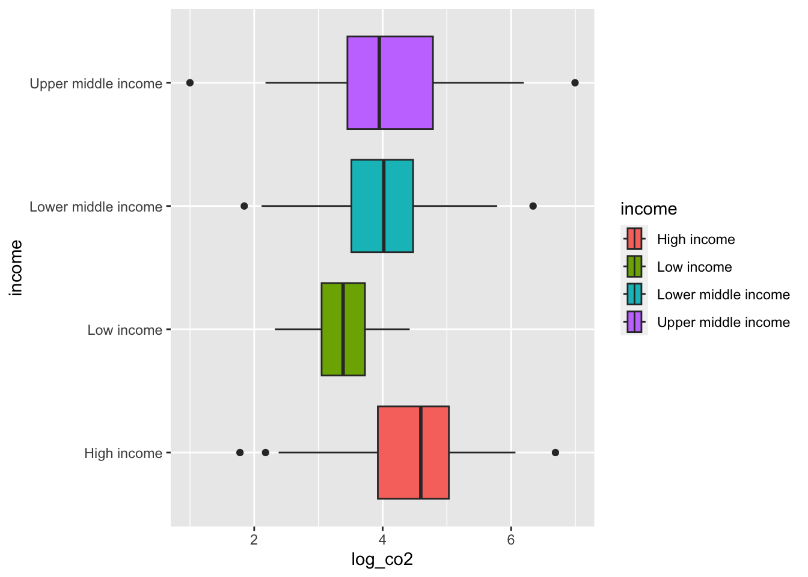
wb_co2_anova <- wb_co2_4anova %>% mutate(hi = as.numeric(income == "High income"))wb_co2_model <- wb_co2_anova %>% lm(co2 ~ gdp + hi, .)
wb_co2_model %>% summary()##
## Call:
## lm(formula = co2 ~ gdp + hi, data = .)
##
## Residuals:
## Min 1Q Median 3Q Max
## -2775444 -69456 -66758 54673 5112814
##
## Coefficients:
## Estimate Std. Error t value Pr(>|t|)
## (Intercept) 6.850e+04 4.110e+04 1.667 0.09727 .
## gdp 4.178e-07 2.066e-08 20.221 < 2e-16 ***
## hi -2.095e+05 7.570e+04 -2.768 0.00623 **
## ---
## Signif. codes: 0 '***' 0.001 '**' 0.01 '*' 0.05 '.' 0.1 ' ' 1
##
## Residual standard error: 466100 on 183 degrees of freedom
## Multiple R-squared: 0.6912, Adjusted R-squared: 0.6878
## F-statistic: 204.8 on 2 and 183 DF, p-value: < 2.2e-16wb_co2_log_model <- wb_co2_anova %>% lm(log_co2 ~ log_gdp + hi, .)
wb_co2_log_model %>% summary()##
## Call:
## lm(formula = log_co2 ~ log_gdp + hi, data = .)
##
## Residuals:
## Min 1Q Median 3Q Max
## -0.97183 -0.19548 -0.02953 0.16620 0.69532
##
## Coefficients:
## Estimate Std. Error t value Pr(>|t|)
## (Intercept) -6.72924 0.23113 -29.114 < 2e-16 ***
## log_gdp 1.03559 0.02235 46.337 < 2e-16 ***
## hi -0.26638 0.05022 -5.304 3.24e-07 ***
## ---
## Signif. codes: 0 '***' 0.001 '**' 0.01 '*' 0.05 '.' 0.1 ' ' 1
##
## Residual standard error: 0.2943 on 183 degrees of freedom
## Multiple R-squared: 0.9258, Adjusted R-squared: 0.925
## F-statistic: 1142 on 2 and 183 DF, p-value: < 2.2e-16income_model <- wb_co2_anova %>% lm(co2 ~ factor(income), .)
income_model %>% summary()##
## Call:
## lm(formula = co2 ~ factor(income), data = .)
##
## Residuals:
## Min 1Q Median 3Q Max
## -286254 -215768 -96018 -3903 9588396
##
## Coefficients:
## Estimate Std. Error t value Pr(>|t|)
## (Intercept) 217188 111597 1.946 0.0532 .
## factor(income)Low income -212135 200875 -1.056 0.2923
## factor(income)Lower middle income -120685 160040 -0.754 0.4518
## factor(income)Upper middle income 69076 160829 0.429 0.6681
## ---
## Signif. codes: 0 '***' 0.001 '**' 0.01 '*' 0.05 '.' 0.1 ' ' 1
##
## Residual standard error: 835100 on 182 degrees of freedom
## Multiple R-squared: 0.01392, Adjusted R-squared: -0.002335
## F-statistic: 0.8563 on 3 and 182 DF, p-value: 0.4649msummary(list(co2_model = wb_co2_model, co2_log_model = wb_co2_log_model, co2_income_model = income_model), statistic = 'p.value')| co2_model | co2_log_model | co2_income_model | |
|---|---|---|---|
| (Intercept) | 68502.943 | −6.729 | 217187.858 |
| (0.097) | (0.000) | (0.053) | |
| gdp | 0.000 | ||
| (0.000) | |||
| hi | −209509.183 | −0.266 | |
| (0.006) | (0.000) | ||
| log_gdp | 1.036 | ||
| (0.000) | |||
| factor(income)Low income | −212135.058 | ||
| (0.292) | |||
| factor(income)Lower middle income | −120685.215 | ||
| (0.452) | |||
| factor(income)Upper middle income | 69075.992 | ||
| (0.668) | |||
| Num.Obs. | 186 | 186 | 186 |
| R2 | 0.691 | 0.926 | 0.014 |
| R2 Adj. | 0.688 | 0.925 | −0.002 |
| AIC | 5388.2 | 77.7 | 5606.1 |
| BIC | 5401.1 | 90.7 | 5622.3 |
| Log.Lik. | −2690.100 | −34.874 | −2798.072 |
| RMSE | 462298.61 | 0.29 | 826089.87 |
7.5.1.1 t-test
high <- wb_co2_4anova %>% filter(income == "High income") %>% pull(co2)
low <- wb_co2_4anova %>% filter(income == "Low income") %>% pull(co2)
t.test(high, low)##
## Welch Two Sample t-test
##
## data: high and low
## t = 2.3527, df = 55.024, p-value = 0.02224
## alternative hypothesis: true difference in means is not equal to 0
## 95 percent confidence interval:
## 31435.4 392834.7
## sample estimates:
## mean of x mean of y
## 217187.9 5052.87.6 Week 7 Assignment
Week 7: Assignment on regression analysis and PPDAC cycle
Work on the following problem.
Problem: Find one problem from the SGDs goal.
Example: WDI environment
https://datatopics.worldbank.org/world-development-indicators/themes/environment.html
Plan: Analyze the data to find out why the problem is occurring.
Data: Collect data from WDI and other sources (OECD, UN, IMF, etc.).
Analysis: Analyze the data. Use what you have learned about regression analysis and descriptive statistics in the previous lectures.
Conclusion: Briefly describe what you learn from the data analysis.
Submission: Your rmd file (Rmarkdown) on Moodle box.
*Deadline : Feb. 8.